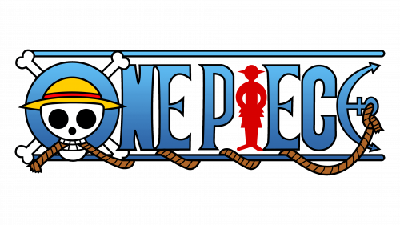

Monkey D. Luffy adalah tokoh utama dalam One Piece karya Eiichiro Oda. Ia merupakan kapten Bajak Laut Topi Jerami yang bercita-cita menjadi Raja Bajak Laut dengan menemukan harta legendaris bernama One Piece.Luffy memperoleh kekuatan setelah memakan buah iblis yang membuat tubuhnya memiliki sifat seperti karet. Ia dikenal karena sifatnya yang ceria, berani, dan memiliki tekad kuat untuk melindungi teman-temannya. Seiring perjalanan, kekuatannya terus berkembang hingga mencapai bentuk Gear 5 yang mengungkap rahasia sebenarnya dari buah iblisnya.Luffy adalah karakter yang menonjol karena kepribadiannya yang murni, tekad pantang menyerah, dan kemampuannya untuk menginspirasi orang lain untuk mengikuti jalannya.
Roronoa Zoro, yang juga dikenal sebagai "Pemburu Bajak Laut" (Pirate Hunter) Zoro, adalah salah satu protagonis utama dalam serial anime dan manga One Piece karya Eiichiro Oda. Ia adalah anggota pertama yang direkrut oleh Monkey D. Luffy dan menjabat sebagai ahli pedang utama serta wakil kapten tidak resmi dalam kelompok Bajak Laut Topi Jerami.Zoro adalah salah satu karakter yang paling dihormati karena dedikasinya yang tak tergoyahkan terhadap impiannya dan krunya.
Shanks, yang juga dikenal sebagai "Kapten Kepiting" (Captain Crab), adalah salah satu tokoh utama dalam serial anime dan manga One Piece karya Eiichiro Oda. Ia adalah kapten Bajak Laut Topi Jerami dan merupakan salah satu dari "Empat Raja Bajak Laut" yang dikenal sebagai "Raja Bajak Laut" (Pirate King). Shanks adalah tokoh yang sangat dihormati karena kekuatannya yang luar biasa dan keberanian dalam menghadapi tantangan besar.